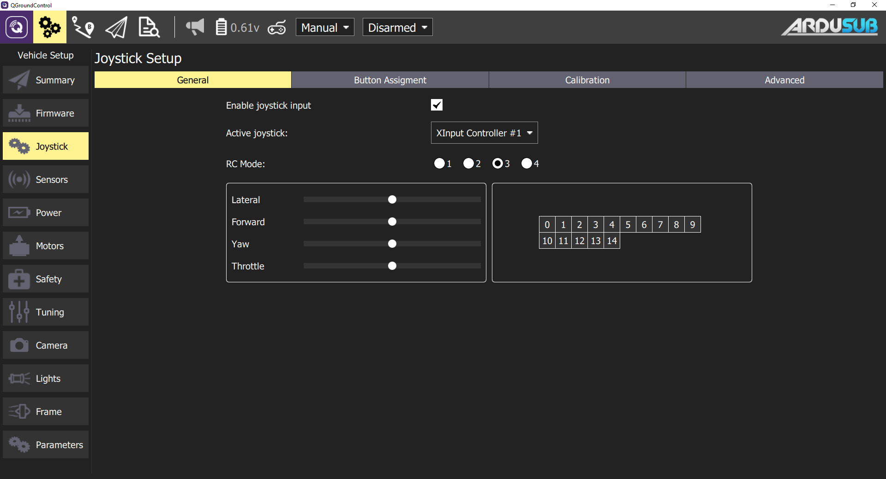
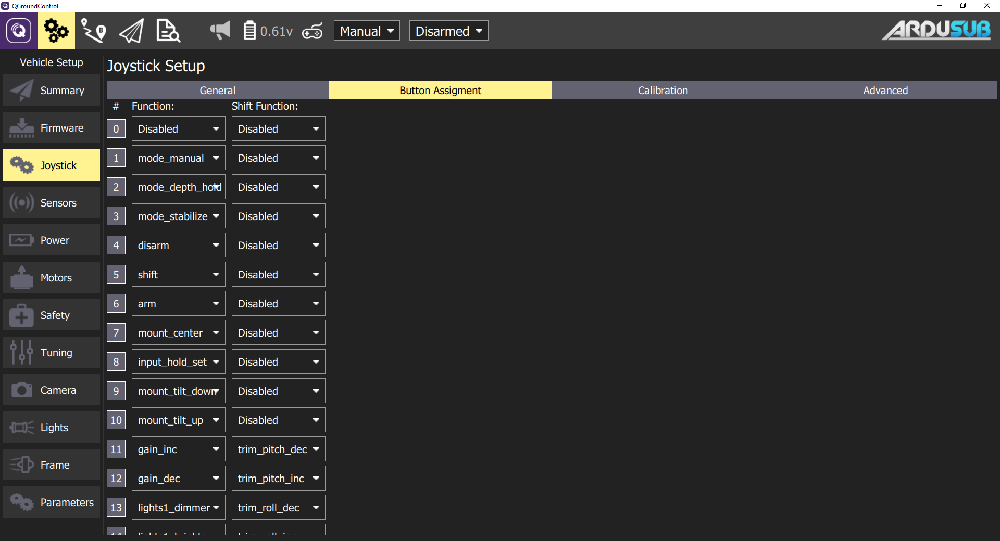
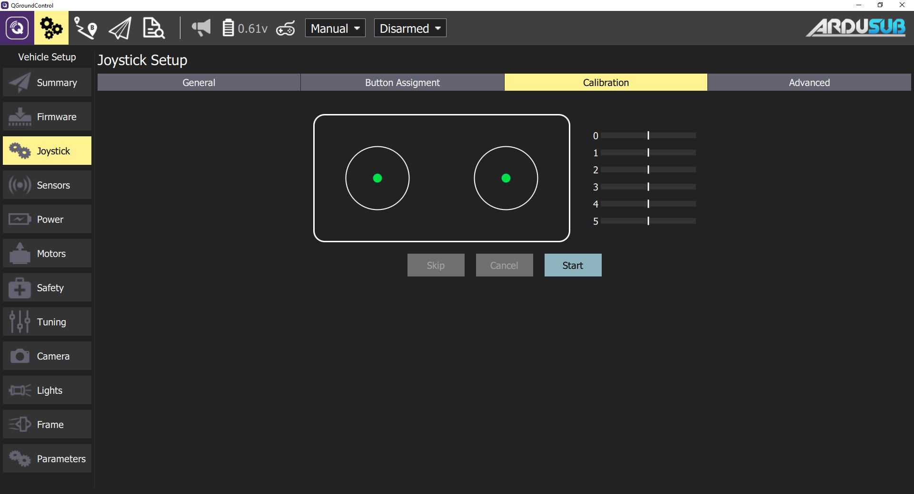
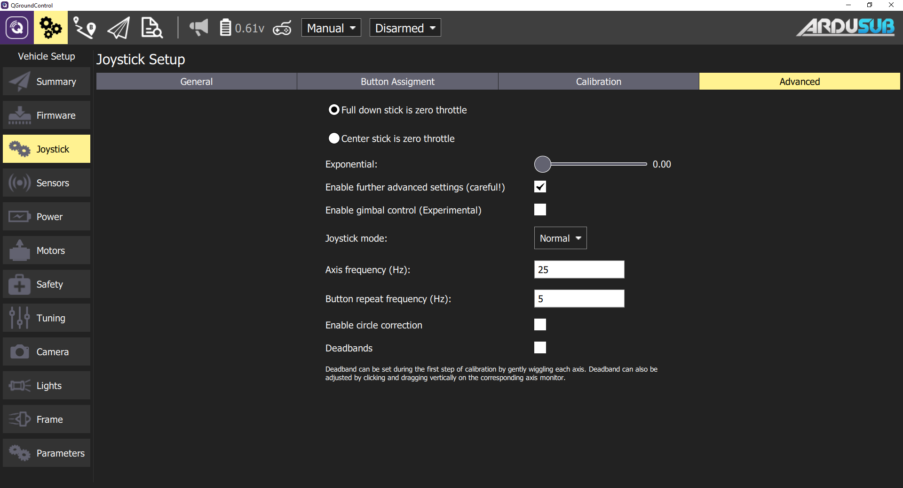

Joystick Setup Page
When a compatible joystick is plugged into the topside computer, the Joystick Setup page will become active and a small red icon will appear in the top toolbar. After the calibration process is complete and the joystick is enabled, this icon will turn white.
General Settings
The General Settings tab:
- Enables or disables a joystick. After calibration, this box will be automatically checked.
- Selecting the intended joystick, if more than one joystick is connected.
- Selecting the RC Mode Style.
- Mode 3 is default. Other modes may be selected based on user preference.
- Quickly viewing axis movement and button presses.

Button Assignment
This tab allows users to reconfigure buttons based on their preference.
Pressing a physical joystick button will highlight the number on the screen. The user can then select the desired button action from the dropdown.

Joystick Button Functions
Joystick buttons can be configured to perform different functions. Each button may be assigned a regular function and a shift function. To use shift functions, a button must be assigned the special shift function. The shift button will then act like a shift key on a keyboard; when held, it modifies the other buttons to execute their assigned shift functions. The available button functions are described below.
General
- none: Do nothing, button is disabled
- shift: When held, act as a shift modifier for other buttons
- arm_toggle: Toggle the armed state of the vehicle
- arm: Arm the vehicle
- disarm: Disarm the vehicle
- gain_toggle: Toggle between minimum and maximum pilot input gain sensitivity
- gain_inc: Increase pilot input gain/sensitivity
- gain_dec: Decrease pilot input gain/sensitivity
- trim_roll_inc: Trim level target roll to the right
- trim_roll_dec: Trim level target roll to the left
- trim_pitch_inc: Trim level target pitch forward
- trim_pitch_dec: Trim level target pitch backward
- input_hold_toggle: Toggle holding current joystick axis inputs (cruise control on/off)
- roll_pitch_toggle: Toggle between roll/pitch and forward/lateral control on joystick input
Mode Selection
These button functions will command a switch to the corresponding flight mode. Please note that the advanced modes are in development and are not recommended for general use.
Standard Modes
- mode_manual
- mode_stabilize
- mode_depth_hold
Advanced Modes
- mode_poshold
- mode_auto
- mode_circle
- mode_guided
- mode_acro
Roll and Pitch Control
Presently (due to legacy/inheritance reasons), there is no convenient way to control the roll and pitch of and ArduSub vehicle with QGroundControl. The available solution is to use the roll_pitch_toggle joystick button function. When this button is pushed, the forward and lateral joystick axes toggle between controlling the forward and lateral motion of the vehicle and controlling the roll and pitch of the vehicle.
The roll and pitch input behaves differently in different flight modes.
- MANUAL: The roll and pitch input control the rotation rate of the vehicle. As long as the joystick input is deflected, the vehicle will continue to rotate. A centered joystick input commands a rotation rate of zero.
- ACRO: This functions like MANUAL, but the rate of rotation is precisely controlled and stabilized.
- STABILIZE: The roll and pitch input control the desired angle of the vehicle attitude. When the joystick input is centered, the vehicle will stabilize a level attitude. When the joystick input is deflected, the vehicle will stabilize the deflected angle. There are two parameters that control the maximum angle of vehicle deflection: the pilot input gain (which scales the input), and the ANGLE_MAX parameter (which controls the maximum angle that the vehicle will deflect in stabilize mode). For example, if the ANGLE_MAX parameter is 80 degrees, and the input gain is 50%, when the the roll or pitch joystick input is completely deflected, the vehicle will deflect 40 degrees ( 0.5 * 80 ). Press the roll_pitch_toggle joystick button while the vehicle is deflected to lock the current deflection angle and return to controlling forward and lateral motion. To clear the roll and pitch input command, switch to MANUAL mode, or press the roll_pitch_toggle button.
- DEPTH HOLD: This functions like STABILIZE mode, but only small angles are tolerated. The vehicle will misbehave at larger angles. Roll and pitch input should be avoided in DEPTH HOLD mode until it is properly supported.
Camera Control
- mount_center: Sets RC Input channel 8 pwm to the value configured by the CAM_TILT_CENTER parameter
- mount_tilt_up: Increase RC Input channel 8 pwm by the amount configured by the JS_CAM_TILT_STEP parameter
- mount_tilt_down: Decrease RC Input channel 8 pwm by the amount configured by the JS_CAM_TILT_STEP parameter
- camera_trigger: Trigger cameras shutter NOT IMPLEMENTED
- camera_source_toggle: Toggle video source, toggles RC Input channel 10 between 1100 and 1900 pwm
- mount_pan_right: Pan mount right
- mount_pan_left: Pan mount left
Lights Control
- lights1_cycle: Increase or decrease RC Input channel 9 pwm by the amount configured by the JS_LIGHTS_STEP parameter, switches between increasing and increasing when output limits are reached
- lights1_brighter: Increase RC Input channel 9 pwm by the amount configured by the JS_LIGHTS_STEP parameter
lights1_dimmer: Decrease RC Input channel 9 pwm by the amount configured by the JS_LIGHTS_STEP parameter
lights2_cycle: Increase or decrease RC Input channel 10 pwm by the amount configured by the JS_LIGHTS_STEP parameter, switches between increasing and increasing when output limits are reached
- lights2_brighter: Increase RC Input channel 10 pwm by the amount configured by the JS_LIGHTS_STEP parameter
- lights2_dimmer: Decrease RC Input channel 10 pwm by the amount configured by the JS_LIGHTS_STEP parameter
Relay Control
- relay_1_on: Sets the pin configured by the RELAY_PIN parameter to output HIGH
- relay_1_off: Sets the pin configured by the RELAY_PIN parameter to output LOW
relay_1_toggle: Toggles the state of the pin configured by the RELAY_PIN parameter
relay_2_on: Sets the pin configured by the RELAY_PIN2 parameter to output HIGH
- relay_2_off: Sets the pin configured by the RELAY_PIN2 parameter to output LOW
relay_2_toggle: Toggles the state of the pin configured by the RELAY_PIN2 parameter
relay_3_on: Sets the pin configured by the RELAY_PIN3 parameter to output HIGH
- relay_3_off: Sets the pin configured by the RELAY_PIN3 parameter to output LOW
- relay_3_toggle: Toggles the state of the pin configured by the RELAY_PIN3 parameter
Servo Control
- servo_1_inc: Increase Aux1 servo output by 50 pwm
- servo_1_dec: Decrease Aux1 servo output by 50 pwm
- servo_1_min: Set Aux1 servo output to the configured minimum pwm according to SERVO9_MIN
- servo_1_max: Set Aux1 servo output to the configured maximum pwm according to SERVO9_MAX
servo_1_center: Set Aux1 servo output to the configured center according to SERVO9_TRIM
servo_2_inc: Increase Aux2 servo output by 50 pwm
- servo_2_dec: Decrease Aux2 servo output by 50 pwm
- servo_2_min: Set Aux2 servo output to the configured minimum pwm according to SERVO10_MIN
- servo_2_max: Set Aux2 servo output to the configured maximum pwm according to SERVO10_MAX
servo_2_center: Set Aux2 servo output to the configured center according to SERVO10_TRIM
servo_3_inc: Increase Aux3 servo output by 50 pwm
- servo_3_dec: Decrease Aux3 servo output by 50 pwm
- servo_3_min: Set Aux3 servo output to the configured minimum pwm according to SERVO11_MIN
- servo_3_max: Set Aux3 servo output to the configured maximum pwm according to SERVO11_MAX
- servo_3_center: Set Aux3 servo output to the configured center according to SERVO11_TRIM
Custom
These are reserved for developer use, and do not do anything by default
- custom_1
- custom_2
- custom_3
- custom_4
- custom_5
- custom_6
For more information, it's possible to check the ArduSub joystick source code.
Calibration
This tab calibrates the joysticks control axis for recognition as proper inputs for QGC.
The calibration process wil only recognize 4 axis (0-3) even if there are more on the physical joystick.

Calibration Procedures
- Press the Start button and then follow the on-screen instructions to calibrate/move the sticks.
- The joystick is enabled as the last step of the calibration process.
- Test the buttons and sticks work as intended by pressing them, and viewing the result in the Axis/Button monitor in the General tab.
Advanced Settings
Some additional options are available in this tab. These options may be useful for specific, unsual setups, for increasing sensibility, and for handling noisy joysticks.
Some options are not required or useful with ArduSub and may inhibit proper operation if used.

Throttle Options
- Full down stick is zero throttle: In this mode, lowered stick sends 0 in MANUAL_CONTROL z, centered stick 500, and raised 1000.
- Center stick is zero throttle: Centered or lowered stick sends 0 in MANUAL_CONTROL z, raised stick sends 1000.
- Spring loaded throttle smoothing: In this mode you control not the throttle itself, but the rate at which it increases/decreases. This is useful for setups where the throttle stick is spring loaded, as the user can hold the desired throttle while releasing the stick.
Exponential Slider
The exponential slider allows you to make the sticks less sensitive in the center, allowing finer control in this zone. The slider adjusts the curvature of the exponential curve. The higher the Expo value, the flatter the curve is at the center, and steeper it is at the edges.
Further Advanced Settings
The advanced settings are not recommended for everyday users. They can cause unpredicted results if used incorrectly.